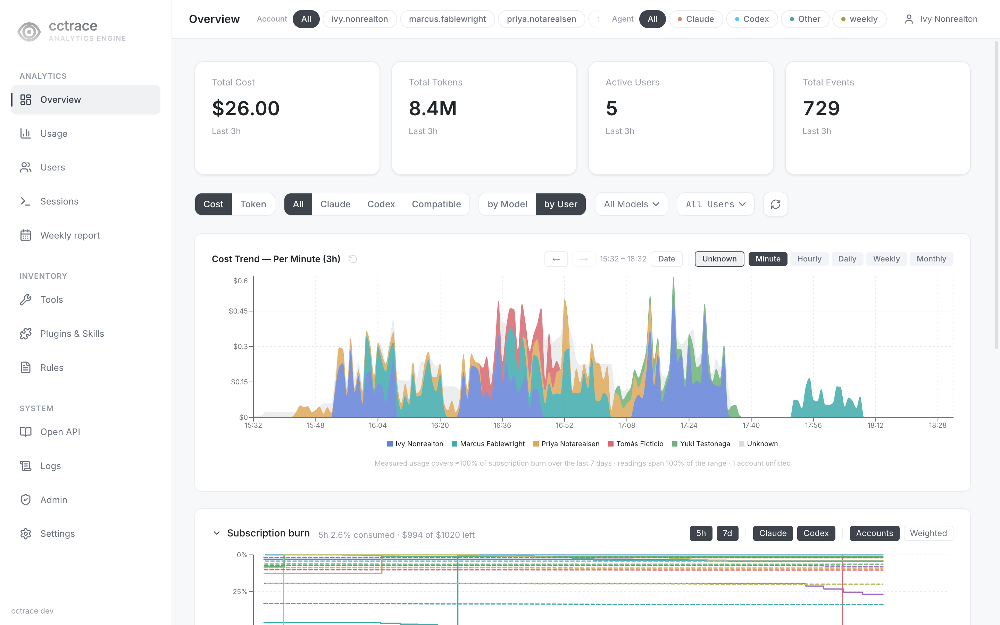

cctrace¶
Self-hosted telemetry for Claude Code and Codex CLI sessions.
cctrace collects what your coding-agent sessions did — token usage, cost, tool calls, and the conversation itself — into a database you run, and serves a dashboard over it. The agent's OpenTelemetry output answers "how much", the session transcripts answer "what happened"; cctrace ingests both and keeps them joined per session.

The dashboard above is a fictitious five-person team on a demo server, not a real deployment. See Dashboard pages for a page-by-page tour.
How data gets in¶
Two ingestion paths feed one store, because neither is sufficient alone.
| Path | Source | Transport | Carries | Latency |
|---|---|---|---|---|
| OTEL | the agent's OTLP exporter | gRPC 4317 (Claude Code), HTTP 4318 (Codex) | token counts, cost, metrics | live |
| Sync | session JSONL files on disk | HTTP /api/sync (port 8080) |
full conversation, tool calls | periodic |
cctrace init configures both on a developer machine: it points the agent's OTLP exporter at the server and registers the hooks that start the sync daemon.
Components¶
| Component | Runs on | Role |
|---|---|---|
cctrace |
each developer machine | Client CLI and sync daemon. Watches the agent's session directory and uploads records. |
cctraced |
the server host | Server. Receives OTLP, accepts sync uploads, serves the API and the dashboard. |
| TimescaleDB + dashboard | the server host | Storage with compression and retention policies; the Next.js dashboard is embedded in cctraced. |
The server and the database run as two containers from deploy/docker-compose.yml. Both images are built from this repository; neither is published to a registry.
What it does not do¶
- It does not send telemetry to a third party. Besides the server you configure, the client queries Anthropic's usage API with the local Claude Code login to read plan limits, and the server downloads OpenAI's public pricing pages. See Privacy. The weekly AI report can send data to an outside AI provider once an admin enables it; it is under active development and not documented here.
- It does not come as a hosted service or pre-built binaries. You build the client and the server images from source.
- Clients built from this repository do not update themselves. The build links an empty update public key, so the client refuses automatic updates; you rebuild to upgrade.
The dashboard stores conversation content. Decide retention and redaction before you connect a team: see Privacy.
Status
cctrace is early. The server API and the database schema still change between releases. Pin a version if you depend on either.
Where to go next¶
- Getting started — run the server and connect one machine, end to end.
- Server install — build the images, set the required values, start the stack.
- Client install — build
cctraceand put it on yourPATH. - Reference — commands, server environment, ports, privacy settings.